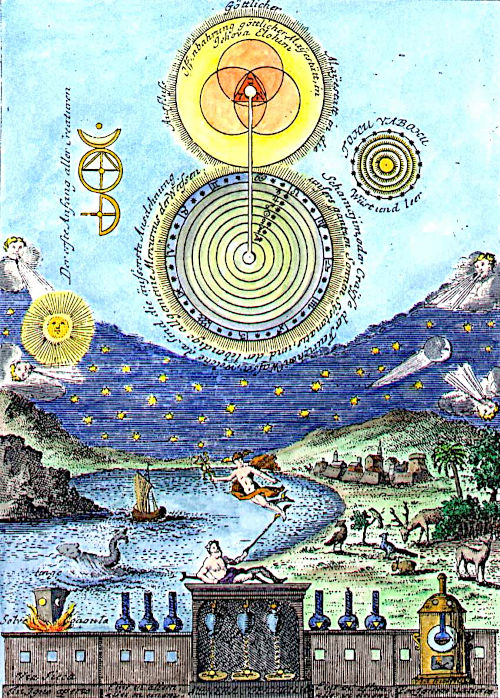
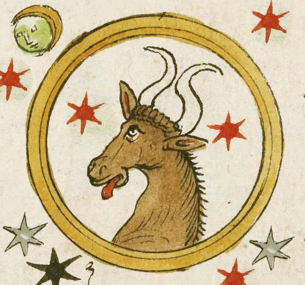
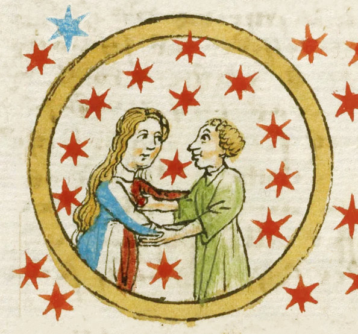
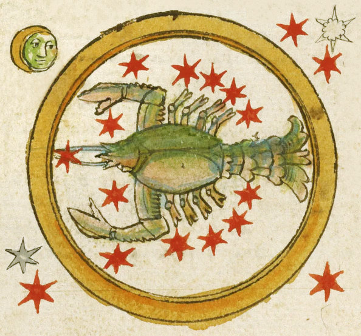
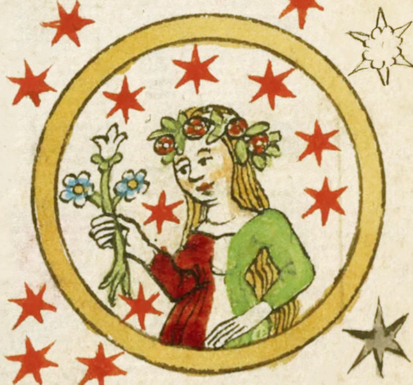
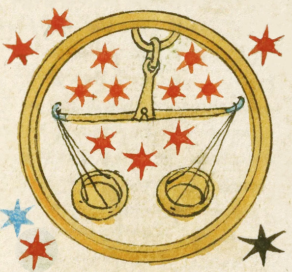
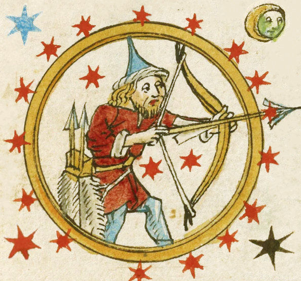
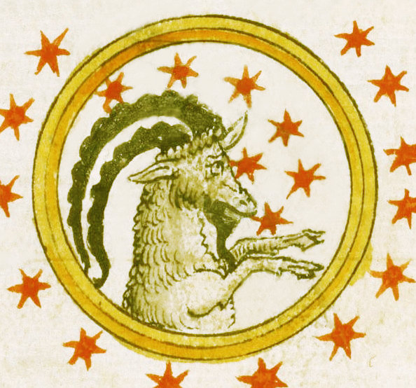
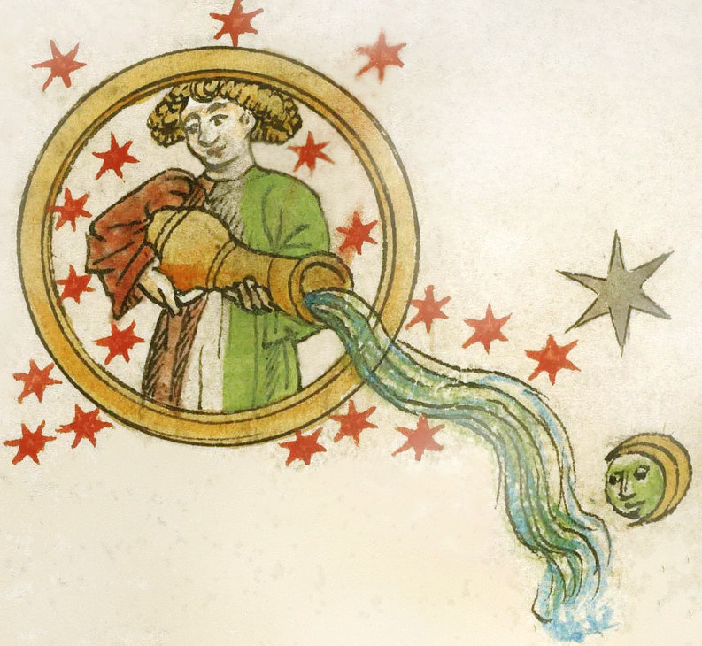
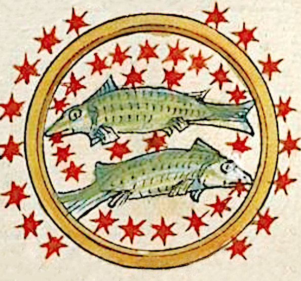

Hermetic Symbolism
Astrology and its Symbols
Astrology is a language. It has its own alphabet, grammar and syntax, and just like with any other language, needs to be learnt to be able to read and write it. Listening or mouthing is not enough. Since it is an artificial construct for a particular purpose and employs the use of symbols more than 'natural' languages, it could be best called a symbolic language.A lot has been said about astrology being something other than an elaborate language but this confusion clearly arises from similarities to its much modified descendents, religion and science. Grasping astrology, requires a fundamental acceptance of what existence really is, the nature of which is encapsulated in the underlying » Hermetic Cosmology. The World, the Cosmos, is made up of the physical, material, tangible stuff of creation, as well as the spiritual, immaterial, intangible, divine realm. This realm is excluded from science as non-existent and from religion as somewhere out there, in heaven.
The word heaven is important here. It betrays where religion got the idea. It's Hermetic. Yet the heaven of religion has, just like with science, been rationalised away from the individual person and rendered inaccessible from daily life. Hermetic ideas give access to the immaterial and spiritual experience of life. This is especially important for human existence, because the Hermetic message is that each new person has been created in the same manner as the very first. The creation continues, life goes on. Creation didn't end on the seventh day.
Within our Hermetic myths and legends, Hermes and Thoth, as well as Hermes Trismegistus himself, invented language and gave it to the world. He also invented astrology and it would follow that astrology is a symbolic language. In the spirit of its Egyptian roots astrological symbols are much more loaded than ordinary letters, being more like hieroglyphs.
Luckily for us, the hellenizing ancient Greeks who struggled with the meanings of the hieroglyphic nature of Egyptian understanding, created a whole new set of terms which are preserved for us, especially within astrological concepts. These terms, once learnt and grasped intellectually, automatically provide a whole new way of perceiving and comprehending the world.
Symbols, Signs, Sigils and Correspondences
shown on the Hermetic Man in Medical Astrology
e.g. The Ram as Symbol for the Sign of Aries
and Sigil A with Head as Correspondence.
and Sigil A with Head as Correspondence.
Astrological Symbols, Signs, Signatures, Sigils and Correspondences
With astrology relying heavily on communicating a lot of information in the most concise form, the following linguistic techniques are often employed. Although these words are too often treated as synonyms, they do actually have different meanings.Symbols are best defined as a representation of something else. For instance, in the art movement of Symbolism, death may be depicted as a skull. In astrology, a lion is used as a symbol to depict the character of the sign of Leo.
Signs in astrology refer to the twelve divisions of the zodiac. They are indicators as to the general character of that part of the zodiac.
Sigils, sometimes known as glyphs are pictograms. Because they are similar to letters of the alphabet, sigils are used as a sort of abbreviation for the full name of something, and once learnt, are easier to read. Astrological sigils have also frequently been used in alchemical texts but are often attributed a different meaning
Signatures are indications appearing in nature having an affinity or correspondence to ailments of the human body. Rooted in astrological medicine, this doctrine has been in use since the time of Dioscorides and Galen. Paracelsus (1493–1541) further developed the concept, writing that "Nature marks each growth ... according to its curative benefit".
Correspondences are those things in the Cosmos which are similar in nature to that which they correspond. For instance, in astrological medicine, the heart corresponds to the sign of Leo and the Sun which rules it.
Macrocosm and Microcosm
Originating in ancient Greece, probably with the philosopher Anaximander (c. 610 – c. 546 BCE), there is the notion that every human being can be treated as a microcosm, a little world, similar to the macrocosm, the entire cosmos, the big world. The esoteric movements of the early modern era, from the 17th century on, such as the Order of the Golden and Rosy Cross, The Hermetic Order of the Golden Dawn and even Feemasonry, all of Hermetic nature, picked up on the idea as the basis for their movements. This of course was astrologically derived and intimately connected to the earlier correspondences in astrological medicine, the major interest of learned people before our modern era.Hermetic Man
Viewed in the light of a microcosm, as a creation in its own right, with the body as the natural part animated by a soul, and a spiritual mind as the divine part, a more complete picture arises. This topic is of major concern within Hermetic Astrology and is treated more thoroughly in the section on the » Levels of Identity.Substance = Understanding
The so called material world has been a concern for millennia as to its nature and composition. A lot of misunderstanding arises from the multitude of loaded meanings for the words used to describe the stuff of the world. This has been compounded by translations between languages. For instance, in ancient Greek there is the word ousia, which in Latin is most translated into substance. Trying to deal with these words etymologically is problematic. Substance literally means that which is standing under something as its actuality. The English word understanding also literally means that, sometimes. The Stoics got around this by declaring that everything in existence is physical, substantial and material. For them, the spiritual realm was an extension of the physical, simply more imperceptible to some.The Twelve Signs of The Zodiac
The Twelve Signs of The Zodiac
The circle of the Zodiac contains twelve signs, each with a different symbolic character. Even though for most astrological applications these are treated as discreet (separate) entities, the zodiac itself is continuous. In Hermetic Astrology, there is a natural transition from one sign to another. The last degrees of one sign are already showing the character of the next.The whole circle of the Zodiac can be viewed in a similar way to that of the "Fool's Journey" through the Major Arcana of the Tarot. In our case, the fool starts out at Aries, keen and unaware of pitfalls or dangers. Travelling through each of the twelve signs, the native acquires some things in life whether they be material stuff or experiences from interacting with the world. The outcome is to end up at the last sign, Pisces, which is concerned about everything in the world, cosmos or universe, exoterically and esoterically. This can escalate to the ultimate need of starting over again with that which has been learnt and become a new type of fool.
Symbols of Astrology
The Signs and Their Meaning
The Ruler of a sign is the planet with the most symbolism in common with it.
+ve means expressive / manipulative,
-ve means receptive / creative
The Modes reveal the dynamic flow of energy within sections of a cycle, whereby Cardinal relates to growing and bringing on something new, Fixed is a sustaining mode holding onto something already in the existence and Mutable means transforming and facilitation or variation in something.
The Element of a Sign reveals the basic symbolic material. Fire - is impulsive, intentional and eager, Air - is inventive, mentally-active and volatile, Water - is emotional, sensitive, changeable, creative and Earth - is practical, realistic, materialistic, stable.

A Aries / Phase 1 / 1st House
Ruler: e Mars Element: z Fire Mode: Cardinal Season: Spring

B Taurus / Phase 2 / 2nd House
Ruler: c Venus Element: w Earth Mode: Fixed Season: Spring

C Gemini / Phase 3 / 3rd House
Ruler: b Mercury Element: y Air Mode: Mutable Season: Spring

D Cancer / Phase 4 / 4th House
Ruler: a Moon Element: x Water Mode: Cardinal Season: Summer

F Leo / Phase 5 / 5th House
Ruler: d Sun Element: z Fire Mode: Fixed Season: Summer

G Virgo / Phase 6 / 6th House
Ruler: b Mercury Element: w Earth Mode: Mutable Season: Summer

G Libra / Phase 7 / 7th House
Ruler: c Venus Element: y Air Mode: Cardinal Season: Autumn

H Scorpio / Phase 8 / 8th House
Ruler: e Mars Element:x Water Mode: Fixed Season: Autumn

I Sagittarius / Phase 9 / 9th House
Ruler: f Jupiter Element: z Fire Mode: Mutable Season: Autumn

J Capricorn / Phase 10 / 10th House
Ruler: g Saturn Element: w Earth Mode: Cardinal Season: Winter

K Aquarius / Phase 11 / 11th House
Ruler: g Saturn Element: y Air Mode: Fixed Season: Winter

L Pisces / Phase 12 / 12th House
Ruler: f Jupiter Element:x Water Mode: Mutable Season: Winter

The word planet is derived from an ancient Greek word planētēs (πλανήτης), meaning wanderer. All seven of the planets, Moon, Mercury, Venus, Sun, Mars, Jupiter and Saturn can be observed to move through the zodiac, not far from the ecliptic.
More Symbols of Astrology
The Planets and Their Meaning
While the zodiacal signs are actually fixed stars within the firmament of the sky, the planets are forever moving through them. Just like the signs, the planets have important symbolic meaning. In Hermetic Astrology, the planets are handled in what is called the Chaldean Order, which organises them in ascending order according to how long they appear to encircle the Earth. The fastest is the Moon and starts the list.
Chaldean Order:
a Moon,
b Mercury,
c Venus,
d Sun,
e Mars,
f Jupiter,
g Saturn
The term Chaldean refers to the Hellenistic Hermetic Astrology practised in the region previously known as Babylonian. Until modern times, astrologers practising that flavour of astrology were often simply called Chaldeans. One of those, named Vettius Valens, outlines how the ancients connected the planets to the signs. Each of the seven planets has its own symbolism. Here are some very brief examples. Knowing this basic information helps makes more sense when dealing with two together forming a phase within a cycle.a Moon
Some Keywords: emotion, sensitivity, reflectionRuler of Cancer
The Moon is like a deep pool of feelings, reflections, memories and unformed thoughts. Being related to everyday speaking and listening, it buffers both incoming and outgoing information so smoothly and automatically that there is no need for conscious monitoring. This can be good in some ways but often things are said without wanting, or knowing, to have said them. An important consideration regarding the Moon is how close it is to the Earth at the time of an event (determined by calculation), as this can have quite an impact on its expression. The closer the Moon is to the Earth, the faster is its apparent motion, which in turn produces significantly faster lunar reactions and responses.
b Mercury
Some Keywords: thought, adaptability, speedRuler of Gemini and Virgo
Mercury is the ancient Roman name adopted for the Greek god Hermes, whose name is still used in Greece for this planet. The symbols for these two gods are not identical but similar enough to determine something meaningful. First and foremost, Mercury is associated with communication, language, thought and ideas, but unlike the Moon, is quite conscious and intentional. When retrograde, expression of communication can be reversed often leading to greater skill at writing, often accompanied by starting at the end.
c Venus
Some Keywords: attraction, desire, harmonyRuler of Taurus and Libra
As ruler of the earthy, receptive and creative Taurus, Venus is the sensual planet, able to appreciate physical characteristics of things in the world. As the ruler of the airy and mindful Libra, Venus is also able to grasp aesthetics and balance harmony, so all round is constantly evaluating the worth and worthiness of whatever is encountered. When Venus is retrograde, it reverses its approach to matters at hand such that where it would normally be receptive, it becomes expressive. Someone in this situation usually has a deep seated feeling of being unappreciated despite receiving more than the usual amount of admiration.
d Sun
Some Keywords: energy, generosity, driveRuler of Leo
The Sun is the eternal logos which brightens everything. It is the true self, the core purpose and undeviating importance in life. As ruler of Leo it revels in being at the center of attention to warm an appreciative audience. The Sun also describes one's energy source and level as well as enthusiasm, interest, optimism and spirit. Of course, the Sun can't have any affliction or negativity of its own but sometimes getting that glowing going can be problematic. What helps the most in such cases is to look at the Sun's relationships to other planets to gain greater access to potentials at hand. The key to the Sun's energy is to get it to flow.
e Mars
Some Keywords: impulse, movement, assertionRuler of Aries and Scorpio
Mars is the planet of action. In a chart it shows where activities will have their greatest effect. Looking at its relationships to other planets can reveal easiness or difficulty when undertaking something, for instance, when in combination with the Sun, where one's energy can flow into one's actions. When Mars is retrograde, a rather unique situation arises. There is a tendency to overcompensate for the feeling of underachieving. The result is to apply so much more force that there can be a possibility of endangering oneself.
f Jupiter
Some Keywords: expansion, capability, fortuneRuler of Sagittarius and Pisces
This is the planet of largesse and extravagance, If something is being done and Jupiter is involved, then it often ends up being larger than life. Jupiter as ruler of Sagittarius, always tends to aim for more. Whether it be something sporty or educational, or with its connection to Pisces, religious or mystical, Jupiter will seek out the most of it. When Jupiter is retrograde, there could be an accompanying feeling of caution in whatever is undertaken, in an effort to ensure there is no wasting of time or resources.
g Saturn
Some Keywords: limits, strength, definitionRuler of Capricorn and Aquarius
Even though Saturn is regarded as a malefic planet, meaning injurious or restrictive, getting to understand what Saturn actually does, can help overcome potential pitfalls or drawbacks. First and foremost is that Saturn relates to form. Attempting to form something into that which it can't be could be seen as either a frustrating experience or a safeguard to prevent deviation from that which would be more appropriate. When Saturn is retrograde, boundaries are not so well defined or perceived which could lead to doing something, or being somewhere, detrimental.
About
Hi, my name is Rod Schneider and I have created this website to illustrate how, with the help of astrology, that negativity can be converted into something more positive. The astrology being shown here is rooted in the most ancient inceptions derived from Hermetism. It is technical but in the hands of a practioner already familiar with astrology has great potential to be helpful. There is also much help for non-astrologers to use astrology in a different manner, namely with cycles and phases.Comments and contributions are always welcome.
Contact: rodschneider35@gmail.com